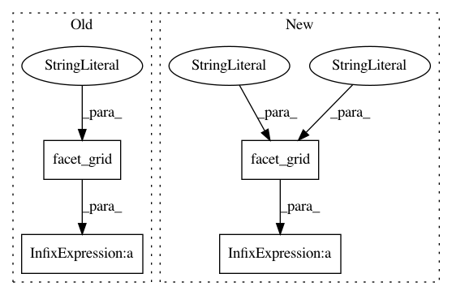

d29a72a2f206ec79c5311e45687d1318dec809eb,ggplot/tests/test_basic.py,,test_facet_grid,#,94
Before Change
with assert_raises(Exception):
print(p + geom_point() + facet_grid(y="variable"))
with assert_raises(Exception):
print(p + geom_point() + facet_grid(y="variable", x="NOT_AVAILABLE"))
with assert_raises(Exception):
print(p + geom_point() + facet_grid(y="NOT_AVAILABLE", x="variable"))
//print(p + geom_point() + facet_grid(y="variable", x=))
After Change
def test_facet_grid():
p = ggplot(aes(x="x", y="y", colour="z"), data=diamonds.head(1000))
p = p + geom_point() + scale_colour_gradient(low="white", high="red")
p = p + facet_grid("cut", "clarity")
print(p)
p = ggplot(aes(x="carat"), data=diamonds)
print(p + geom_density() + facet_grid("cut", "clarity"))
In pattern: SUPERPATTERN
Frequency: 3
Non-data size: 4
Instances
Project Name: has2k1/plotnine
Commit Name: d29a72a2f206ec79c5311e45687d1318dec809eb
Time: 2013-12-06
Author: jasc@gmx.net
File Name: ggplot/tests/test_basic.py
Class Name:
Method Name: test_facet_grid
Project Name: has2k1/plotnine
Commit Name: 7df71763830c03d9484263e3ec70052a55dc2877
Time: 2018-05-06
Author: has2k1@gmail.com
File Name: plotnine/tests/test_facets.py
Class Name:
Method Name: test_facet_grid_scales_free_y
Project Name: has2k1/plotnine
Commit Name: 7df71763830c03d9484263e3ec70052a55dc2877
Time: 2018-05-06
Author: has2k1@gmail.com
File Name: plotnine/tests/test_facets.py
Class Name:
Method Name: test_facet_grid_scales_free_x